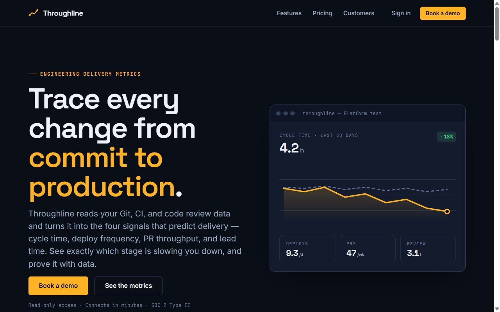
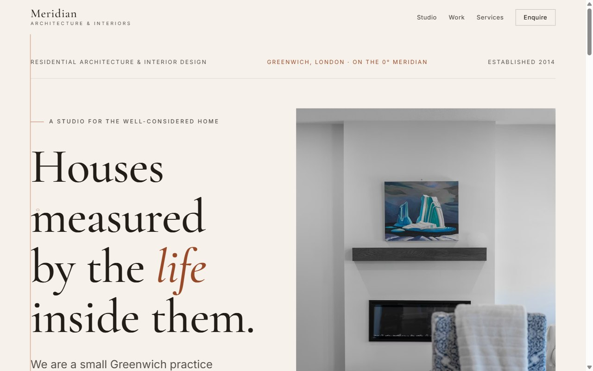
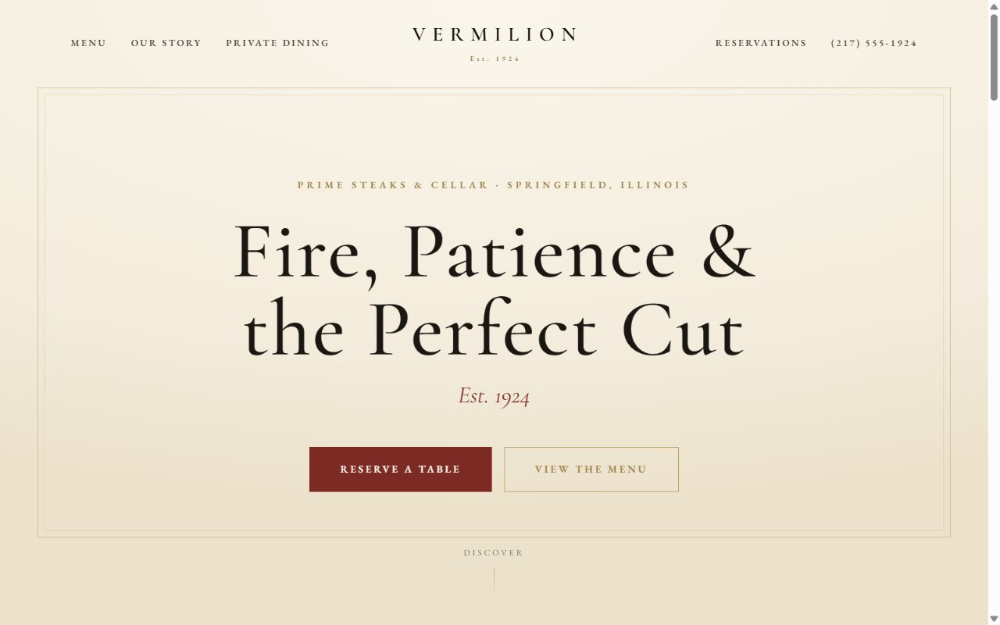
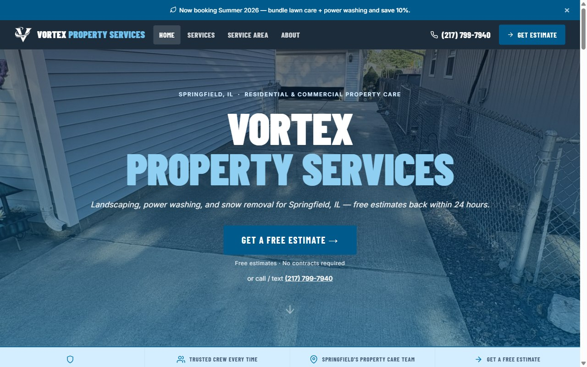

Throughline
Marketing site for an engineering-delivery metrics platform, fronted by a live data-dashboard hero.
Building Terranova
Flipper Zero Firmware / GPIO Module Builder
Focused on turning the Flipper Zero into a clean, reliable security tool: firmware workflows, organized SD-card builds, GPIO add-on modules, hardware testing, and documentation that shows what actually works.
Where to look
About
Recent CACC cybersecurity grad with a hardware-heavy background in robotics, home labs, and Flipper Zero module work. The full background.
Read more →Work
Terranova firmware notes, GPIO modules, lab tooling, certifications, and the practical builds behind the profile.
See the work →Selected work
Hardware experiments, Flipper Zero tooling, and hand-built sites. The profile is shifting toward firmware, GPIO modules, and practical security hardware.

Marketing site for an engineering-delivery metrics platform, fronted by a live data-dashboard hero.

An editorial site for a Greenwich residential architecture & interior design practice.

A moody, classic site for a 1924 Springfield prime steakhouse and wine cellar.

A conversion-focused site for a Springfield lawn-care, power-washing & snow-removal company, with a service-area map.
Interested in Flipper Zero firmware, GPIO modules, embedded security tools, or entry-level IT and cybersecurity work in Springfield, IL.